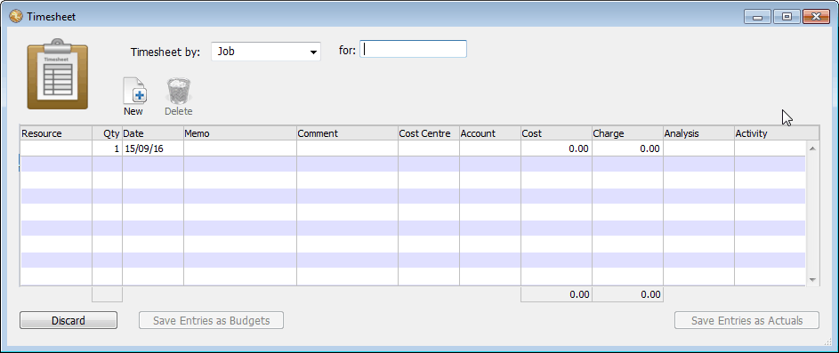
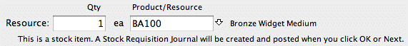
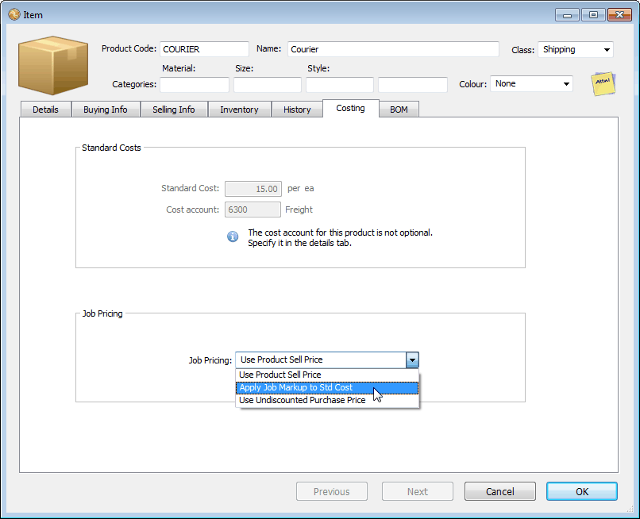
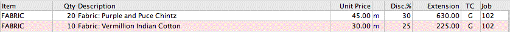
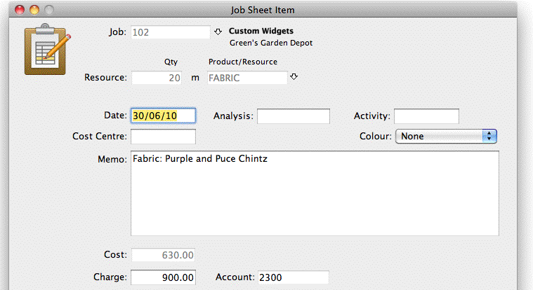
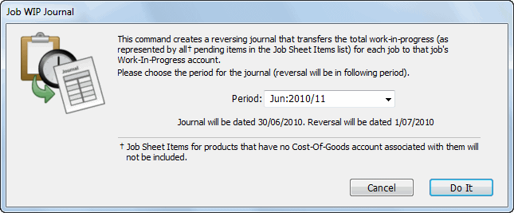
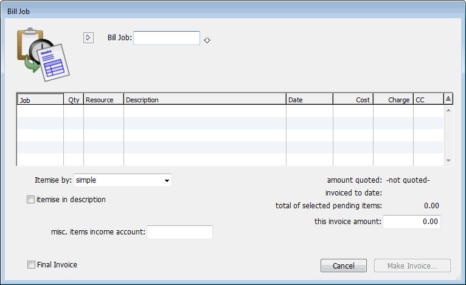
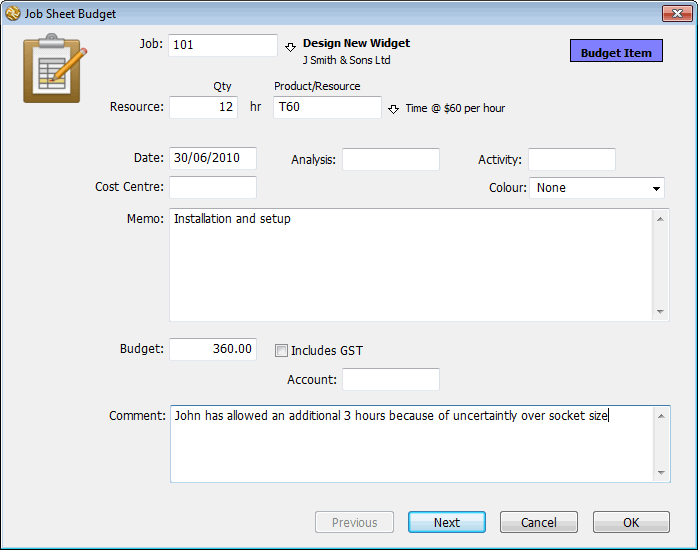
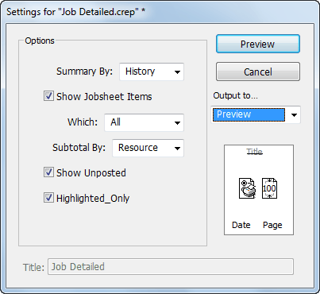

As well as entering Job Sheet items individually through the Job Sheet Item list, MoneyWorks allows “batch” entries through the job “timesheet”. Although termed a “timesheet”, information can be entered by resource (user), job, date and cost centre. To enter job sheet information by a timesheet:
The Timesheet Entry window can also be used as an easy way to enter job budgets.
The Timesheet entry window will open

For example, if you are entering your time you would set the pop-up to Resource and the for field to your code for time; if you have used the Job Bag form to collect information about a single job, you would set the pop- up to Job, and put the job code into the for field.
Note that the entry columns are determined by the setting of the pop-up menu. Pressing tab would have taken you to the first line, provided that you had made a valid entry in the for field (if you entered an invalid code, the Choices window would have been displayed).
Use the tab key to move you between fields (shift tab to go backwards). The return key will move you to the next line, creating it if need be.
The fields are described in To Manually Enter a Job Entry.
Note: Cost and charge amounts are always assumed to be in the local currency.
Note: Once you have entered data into the timesheet, you cannot change the
Timesheet pop-up until you Accept or Discard the current entries.
When all the details are entered on the timesheet, click Save Entries as Actuals
The entries will be checked—if there is anything that needs fixing (such as a blank required field), a notification will be displayed. You need to correct these before the timesheet can be accepted.
Note: If you are entering job budgets instead of actual time sheet entries, click the Save Entries as Budgets button.
Clicking Discard will, after prompting, discard the entries.
When a timesheet is accepted, individual job sheet records are created for each line on the timesheet form; these can be seen in the Pending sidebar tab of the Job Sheet Items list. Note that the original timesheet entry window cannot be recreated (it is for batch entry only, not for subsequent editing). Instead if necessary edit the items in the job sheet items list.
Use the return key to move to the start of the next line (saves tabbing to the end). If necessary a new line will be created;
Use the Up and Down arrow keys to move vertically through lines on the timesheet screen;
Click the Delete icon, or press Ctrl-Shift-D/⌘-Delete, to delete the current line:
You can have more than one timesheet open at once—simply choose Command>Job Timesheet
It is often necessary to requisition stock items for use in a job. For example, a sail maker you will have stock of sail cloth. When making a sail for a client, the necessary cloth will be extracted from the store room and used for the job.
Stock requisitions can be handled by simply creating an entry in the job sheet file for the quantity of the item used. When a stock item is used in this manner, a message is displayed in the job sheet entry window:

When the OK or Next button is clicked, a stock requisition journal is automatically created and posted (even if the stock item is out of stock), so that the stock level is reduced4. The journal will be have the same date as that on the job sheet item. Because of the accounting transaction associated with it, care should be taken in subsequently modifying or deleting such a job sheet item.
Stock items entered into the Job Timesheet window will also generate a stock requisition, but no warning is given.
Note: If the item is serialised, you will need the enter the serial/batch number into the serial number field. Similarly a location field will be visible if the Stock Location tracking option is on.
Important: In general, transaction detail lines involving stock items that are tagged to a job will have no effect on the actual stock level. For purchases, it is assumed the item is being purchased specifically for the job. For sales, it is assumed that a stock requisition has been made through the job sheet file as described above, and is just now being invoiced out. The one exception to this is stocked items that are received before the invoice is processed: these go into stock and must be requisitioned separately.
Maintaining correct costs and chargeouts is critical to job costing. When you enter a job sheet item, MoneyWorks automatically enters the cost and sell price for the item.
Note: All prices that are used in the job sheet file are GST/VAT/Tax exclusive—this will be added (if appropriate) when you invoice the job.
Note: Costs and prices are converted into the local currency in the job system. If you bill the job to a client using a different currency, the invoice is generated in the client’s currency based on the system exchange rate.
The sell price is what you expect or normally sell the item for. It is entered in the job sheet for information only, and is not a commitment to sell the product or resource at that price. It is based on the client’s Price Code, discount and quantity price breaks at the time of entry.
The real sell price is determined when you invoice the job out, and may bear no relationship to the calculated sell price for the job. Indeed the individual items that have been entered in the job sheet may not appear at all on the final invoice, and hence may not have a real sell price. Only the total job itself will have a value.
How the costs and markup are calculated for products and resources when the Job Control preference Enable Job Costing and Time Billing is set is determined by the settings in the Costing panel of the Product entry-screen.

The Standard Costs fields relate to costing information, while the Job Pricing
pop-up menu is used to determine charges for the item.
Standard Cost: This is the standard cost that will be used in job costing. If the product is purchased the last discounted purchase price of the item is used. For non-purchased items you can specify a “standard cost”. This represents the estimated cost to you of providing the item—determining a standard cost is something of a black art.
Cost Account: This is the cost account for the item for work in progress purposes, which can be specified here for non-purchased items. For purchased items, this will be set to the cost of goods account as specified in the Details tab.
Note: This account is used to create the work in progress journal. If there is no cost account specified then costs associated with this resource will not be considered as work in progress.
Use Product Sell Price: The sell price is that of the sell price in the product file.
If the product is entered into the job sheet file directly, the buy price of the product is used to determine the cost price, and the sell price of the product determines the sell price. If the item is a stocked product, the
average unit price is used to determine the cost price (and a stock requisition journal is created).
If the product is entered into a transaction detail line associated with a job, the cost price is the actual price paid as specified in the detail line, even if the product is a stocked item.
Use Job Markup applied to Std Cost: The sell price is determined by applying the standard markup for the job to the cost. The cost is determined in the same manner as in the Use Product Sell Price option.
Use Undiscounted Purchase Price: This only affects products entered through a transaction, and not through the job sheet entry. The product must be purchased and sold, and not a stock item.
Consider the following: Part of the service of an interior decorator is the supply of fabric. Conceivably each possible fabric could be entered as a product, with its own code and price. However with thousands of possible fabrics, each with a different colour, width and price, and with designs being added and discontinued each day, the maintenance of such a product file would be immense. The Use Undiscounted Purchase Price option is designed for this situation.
Following on from the example above, a generic product with a code of FABRIC could be used, with no buy or sell price specified (these would vary depending fabric type), with the Job Pricing set to Use Undiscounted Purchase Price. Let’s say we purchase two lots of fabric for job 102. We enter the purchase as either a creditor invoice or a cash payment (depending upon how we paid for it). The detail lines of the transaction will be:

Here we have entered the recommended retail price of the fabric (per unit) into the Unit Price field. This is how much we intend to charge the client for it, and hence this will become the sell price. However we actually pay less than this for the fabric, and we enter the total amount paid (less GST/VAT/ Tax) into the extension column. This becomes the cost price of the item.
When the transaction is posted, a job sheet item is created, for each detail
line. The first of these is shown below.
In summary, when products with Use Undiscounted Purchase Price set are transferred from a transaction to a Job Sheet, the sell price is determined by the UnitPrice x Qty, and the cost is set to the (discounted) Extension.

A Work-in-Progress journal can be created at any time. This is a reversing journal that determines the value of your work-in-progress at a point in time. You will need to do this at the end of the financial year, and possibly at each month end.
The journal is created by scanning all pending job sheet items dated on or before the journal date. The expense items in these are summarised by account code and by work-in-progress account. The journal debits the work-in-progress account(s), and credits the expense accounts. Entries with no expense account code will be ignored.
The journal will be set to automatically reverse at the start of the next period, crediting the work-in-progress account and debiting the expense items. Thus the work-in-progress journal will correctly carry forward unbilled jobs to the next financial year.
The Job WIP Journal Creation window will be shown.

This will normally be the current period. The journal will be dated on the last day of the period.
Click Do It
The unposted journal will be created and displayed. This is a standard general ledger journal which is set to reverse on the first day of the next period. It includes all unprocessed job sheet items dated prior to the last day of the selected period that have an associated expense account.
If you also set the post option the journal will be posted.
At some point you will want to create an invoice for the job. This can be done at any stage after you have created the job in MoneyWorks, and you can raise as many invoices for a job as you want— there might, for example, be a pre- payment on the job, the job might be invoiced out in a number of predetermined amounts, or there might be a single invoice for the whole job.
When you bill a job, you are asked what items to include in the invoice, how much to invoice and what form the invoice should take. The invoice is then generated for you (as an unposted transaction), and you have the opportunity to alter it if you need to.
To create an invoice for a job:
The Bill Job window will be displayed.

A list of unprocessed job sheet items will be displayed. These are the items that have not yet been accounted for in previous invoices. Items in this list that are highlighted (they are all highlighted by default) will be included in the next invoice.
Note: If there are any outstanding purchase orders or unposted transactions against the job, a warning message will be displayed at the bottom of the window.
Note: If the job code is also a project code, any job sheet items for jobs belonging directly to the project will be included and able to be billed out. However the warning for unposted/incomplete will only be shown for
transactions that relate to the project, not to the sub-jobs.
Whenever you click on an item, its highlighting will be turned off. Clicking on the item again turns the highlighting on.
Itemise by: There are many different ways in which you can create an invoice.
You might for example just want a simple invoice that says “As per quotation”, or alternatively you might want to itemise every item used. This is determined by the itemise by pop-up menu, whose options are:
simple: A single line service invoice will be created. The income account will be that specified in the miscellaneous items income account. When the invoice is created you will need to enter the text to appear on the invoice, unless the Itemise in description option is set (see below).
date and resource: Each job sheet item is presented on the invoice in date order.
resource: Job sheet items are accumulated by resource, and a single invoice line is generated for each resource used in the job.
account: Job sheet items are accumulated by (income) account, and a single invoice line is generated for each account used in the job.
cost centre: Job sheet items are accumulated by cost centre, and a single invoice line is generated for each cost centre—you must supply a departmentalised account whose group contains the cost centres.
Itemise in Description: It may be that you want to summarise the job sheet items memo fields on your invoice. For example:
To: Meeting with John; Site Visit; Preparation of Plans
Set the Itemise in Description option if you want the memo descriptions carried through to the invoice
The memos made in the job sheet items will be gathered together and will appear on the appropriate invoice lines. This option is not available for all invoice types.
Miscellaneous Items Income Account: There will be situations where the income account for an item cannot be identified from the information in the job sheet items. The obvious example of this is where you are creating a single line service invoice—MoneyWorks needs to be told which income account to use. Other instances will arise where (for example) the cost centre used is not a valid department for the specified account.
To overcome this possibility, you must specify a default general ledger income account when you are preparing an invoice.
Enter the miscellaneous items income account code
This is the default income account that MoneyWorks will use if it cannot determine which income account to use. It must be an income account, and if it is departmentalised, the department must be specified.
This Invoice Amount: The this invoice amount field contains by default the sum of the job sheet items that are highlighted. It may be that you do not wish to invoice this exact amount out (for example, there were some problems with aspects of the job that caused costs which you cannot pass on).
You can change the amount of the invoice by entering an amount into the
this invoice amount field.
This is the amount that will appear on the invoice.
Balance by: If you change the invoice amount, the generated invoice may no longer add up and will need to be adjusted. You specify how the adjustment will be done using the Balance by options:
pro rata detail lines: The net value in each detail line in the transaction is multiplied by a constant so that the sum of the detail lines agrees with the altered invoice amount.
add miscellaneous items line: An additional detail line is added to the invoice. The amount of this line is the difference between the sum of the highlighted job sheet lines and the invoice amount entered. It will be positive if you have increased the amount of the invoice and negative if you have decreased the amount. You can enter whatever text you want in the invoice to explain the adjustment.
carry difference forward: Similar to “add miscellaneous line item”, except that a new pending job sheet item is also created for the difference. This can be billed out in a future Bill Job, either reducing or increasing the size of that invoice. You can use this for pre-billing, with the amount being carried forward to offset against work done.
Final Invoice: If set, moves the job from Active to Completed
The job will be transferred from active to complete after the invoice is made. Note that this does not preclude you from raising further invoices (or entering additional costs) into the job should it be necessary.
Click Make Invoice to generate the invoice
A debtor invoice will be created (to the customer specified in the job in the job file) and displayed on the screen.
Note: If the client does not use the local currency, the charges on the invoice will be converted to the client’s currency at the system exchange rate.
You can change this invoice if required. However if you create additional detail lines in the invoice be sure to make sure that the new lines are tagged to the job, otherwise they will not be transferred through to the job sheet items file and your job profit reports will be incorrect.
Note : If you are billing items out that require a serial/batch number and which were requisitioned, the serial/batch number is not carried through onto the invoice transaction (and should not be entered there). This is to avoid
double counting the item’s serial number (the same applies to stock locations).
If you need to show the serial/batch number on the invoice, you can modify the invoice form to include a Find() function that gets the serial/batch numbers from the original job sheet lines. The following for example, when inserted into a column of the form (with word-wrap on), will list up to 100 serial numbers for each product billed on the job:
find("jobsheet.serialnumber", "resource = `"+detail.stockcode+"` and DestTransSeq = "+transaction.sequencenumber, 100, "\r")
See the MoneyWorks Forms Designer for more information on creating and modifying invoice forms.
The invoice will be saved as an unposted transaction (or posted if you have set the post option), and all job sheet items included in the invoice will be transferred from pending to processed (so they won’t be invoiced again).
If you click Cancel, the invoice will not be saved and you will be returned to the Bill Invoice screen where you can tinker further.
If you enter a project code when you use Bill Job, all job sheet items for jobs that are in the project will be displayed (but not sub-jobs for these jobs). This allows you to bill a number of jobs (the debtor is the project client) in one go.
A side effect of this is that the invoice will be tagged to the project, and not to the individual jobs. Thus the income will not be recognised by the job report for the jobs (but will appear in the job report for the project).
There will be occasions when work has been done on a job, and all or part of the job cannot be invoiced. To write off job sheet items concerning a job:
Only those job sheet items that you want to write off should be selected.
The highlighted items will be deleted. This leaves no record of them.
or: Choose Command>Move to Processed without Billing (or press Ctrl-K/⌘-K)
The highlighted items will be moved from Pending to Processed. This allows you to mark items as being processed without raising an invoice.
Cost budgets can be specified for each job by manually creating budget job sheet items. These contain similar information to job sheet items, except that the requirements on entering the information have been relaxed.
These can also be created automatically from Quotes by using the Accept Quotes as Job command — see Quotes.
Job budgets can also be entered “in bulk” by using the Job Timesheet. Just click the Save Entries as Budgets instead of Save Entries as Actuals.
To enter a job sheet budget:
The job sheet items list will be displayed.
Any existing budget records will be displayed.
The job sheet budget entry screen will be displayed.

You must specify the job code for the budgeted item. If you enter an incorrect code the choices list will be displayed.
The type of information that you will enter depends on to what level you have done your budgeting. For example if you have a budget for every single resource used in a job, you will need to enter the budgeted quantities and resource codes for each of these. Alternatively, if you are budgeting by cost centre, you will need to enter a budget record for each cost centre involved in the project (leaving the resource empty).
Another factor to consider when entering budgets is their timing. You can use the date field to indicate when approximately the budgeted resource will be used. If there is a single budget for the entire duration of the product, your budgets will be dated the same. If the budget is monthly, you will have several entries (each dated differently) for each resource or cost centre for each month.
Click Next to save these and enter another level of budget
Click OK if this is the last item in your budget.
Job Budget Reporting: You can report on budget figures in the job analysis reports — see Value Columns. However it is important to realise that these reports will only pick up the budget figures for the breakdown level of the report.
As an example, consider the case where you have budgeted for every resource used in a project. If you print out a report based on Cost Centre, the budgets will show as zero. This is because there are no budgets for the cost centres (they are for products). In this instance to get correct results you need to print out a report based on products.
The standard job reports that are provided with MoneyWorks are located under Job Reports in the Reports menu. You can modify many of these or you can design you own reports to meet your own specific requirements—see Custom Reports and Analysis Reports.
You can also print some of the reports for selected jobs by highlighting the jobs in the Job list and clicking the required report in the list sidebar.
The Job Tracking reports are based on the information in the Job Sheet Items file. Reports with the prefix “JT” are used for Job Tagging and are discussed in Job Tagging Reports—these are based on transactions whose detail lines have been tagged to a job and do not refer to the Job Sheet file.
Active Job List: Provides a single line summary for each active job showing start date, amount quoted, amount billed to date and amount pending (work that is not yet billed).
Job Detailed: Prints a detailed report of the active or highlighted jobs. This is the definitive report of how a job is progressing.

If the report is run with the Summary by History, it shows each job sheet item that is used on the job, and these can be subtotalled by Resource, Account, Analysis, Cost Centre, Type (income and expenses), Colour or Activity.
For each job sheet item, it reports the quantity used (if appropriate), the cost, the markup and intended charge out, the amount recovered and the balance to recover. Any unposted transactions or purchase orders tagged to the job are printed after the Job Sheet details for each job.
If the Summary by Budget option is selected, the report shows budgeted and actual costs for each job sheet item, along with projected costs (based on the percentage complete), and the current job profit or loss.
Job P & L: Job analysis report that summarises and shows the income and expenditure for the highlighted job(s) in the Job list. The report lists the quantity of each resource used on the job, its actual and budget cost, the variance, the theoretical resale value and the profit or loss on the item. Totals for the job itself are provided.
Job P & L Summary: Prints a summary of the highlighted job(s) in the Job list. showing the total incomings, outgoings and the difference.
Job Resource Summary: Prints a summary of the resources used for the highlighted job(s) in the Job list. Gives the quantity of each resource used in a job with its actual cost, estimated value and the difference.
Job Cost Centre Summary: Prints a summary showing outgoings by Cost Centre for the highlighted job(s) in the Job list. For each cost centre it shows the actual cost of the work done, its estimated value and the difference.
Job Account Summary: Prints a summary showing outgoings by general ledger Account code for the highlighted job(s) in the Job list. For each account code gives the actual cost of work done, its estimated value and the difference.
Job Forms may be printed for selected jobs by highlighting the jobs in the Jobs list, and choosing Print Job Form from the Command menu (or press Ctrl-[/⌘-[). The Print Job Forms dialog is displayed.
Choose the form to use from the Use Form pop-up menu—a number of forms have been provided, and these are described below. You can modify these or create your own by using the Forms Designer.
Job Bag Form: An empty form suitable for the hand recording of time and other resources used on the job.
Job Items Pending: A form containing a list of pending (unbilled) items for the job, along with their sell value.
Job Performance: A summary of the income and outgoings for each job, along with profit to date and a performance indicator (the ratio of income to expenses).
Job Work Statement: An itemised list of time and disbursements used on a job, with a summary of time and disbursements already billed and remaining to bill. The Adjustments amount on the form is the difference between the amount processed and the amount actually invoiced.
Job Work Statement List: A shortened version of the Job Work Statement, showing just the summary portion for each job.
1 In MoneyWorks 6 and earlier this option was set in the Posting confirmation window.↩︎
2 This cannot be done in multi-user mode— see Changing “code” fields.↩︎
3 You can transfer this to work-in-progress by using the Work-in-Progress Journal command.↩︎
4 The product’s expense account is debited. and it’s stock account credited. This can be transferred to work-in-progress by the Work-in-Progress Journal command.↩︎
A fixed asset is an item with a useful life greater than one reporting period and with a value greater than some minimum value normally set by your local tax authority. It will be purchased for productive use, and not for resale in the short term. Thus assets such as land, buildings, equipment, machinery, vehicles, and leasehold improvements are fixed assets, whereas goods purchased for resale (inventory) are not.
When a fixed asset is purchased, it cannot be treated as an expense. Instead a portion of it is expensed over the life time of the asset. This is known as depreciation, and the allowable rates of depreciation are normally set by the local tax authorities, and hence differ from country to country.
The MoneyWorks Asset Register is designed to facilitate the acquisition, depreciation and disposal of assets, both from an operating and financial perspective. It supports straight line and diminishing value depreciation, calculated either monthly or annually.
The asset register maintains a list of assets and relevant details about each asset, such as purchase date and price. When an asset is purchased, and the transaction is entered either as a payment or supplier invoice in MoneyWorks, an entry about that asset can be automatically created in the register.
Alternatively, assets details can be entered directly into the asset list or imported in bulk.
Each asset is allocated to an Asset Category, such as "Furniture and Fittings" or "Motor Vehicles", and will inherit the default depreciation type and rate associated with that category (this can be over-written for an individual asset). Asset Categories need to be set up before you can enter any asset details. These categories are also used for reporting purposes.
Note: You should check with your accountant or local tax authority as to what are the allowable depreciation types and rates for asset categories in your jurisdiction.
You can periodically do a "Depreciation Run", which calculates the depreciation for the assets based on their current value, depreciation rate and type. Assets can also be revalued (either up or down).
The Asset Category Window
In addition to grouping the assets for reporting purposes, the Category of an asset determines which general ledger codes are used for depreciation, accumulated depreciation, gain/loss on disposal etc. A newly created asset will inherit the depreciation type and the rate specified in the category as its default.
When an asset is finally sold or otherwise disposed of, there is often a discrepancy between the depreciated value of the asset and the realised value. MoneyWorks will put in the appropriate accounting entries for this "Gain or Loss on Asset Disposal".
If you are recording existing assets, or transferring them from another register, when you create the asset in MoneyWorks you need to also specify:
The existing accumulated deprecation on the asset;
The date the asset was last depreciated.
The bookvalue that you specify must be the original cost less accumulated depreciation.
Assets that have been depreciated using diminishing value need to have their bookvalue specified as at the end of a financial year (this is necessary because it is used to calculate the following year's depreciation).